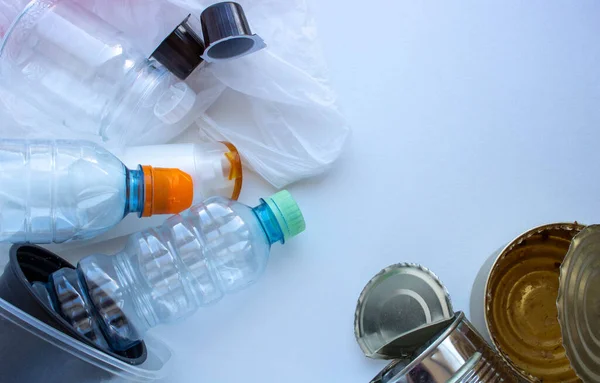
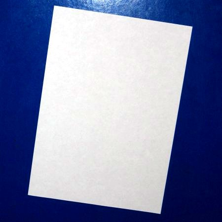
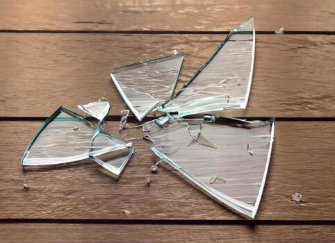
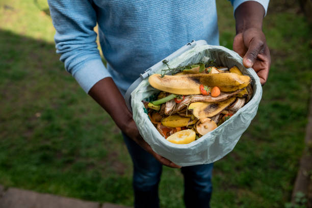
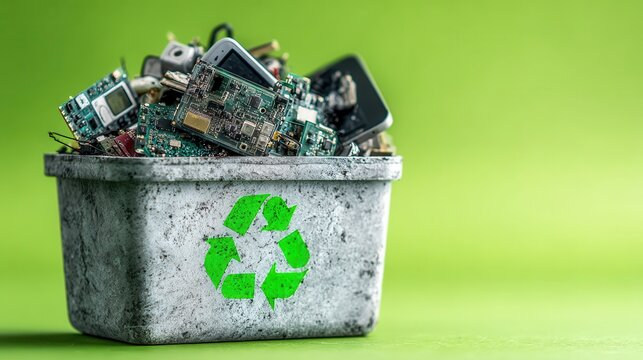

Learn about different types of waste, understand their importance and discover how to segregate them responsibly.
Separate Waste. Save Earth.
Identify different waste materials and understand their proper disposal methods.

01Plastic bottles, containers, bags, food packaging and wrappers.
1 RECOVERY POINTS / ITEM
02Newspapers, cardboard, notebooks, paper bags and packaging.
1 RECOVERY POINTS / ITEM
04Glass bottles, jars, containers and other recyclable glass items.
1 RECOVERY POINTS / ITEM
05Vegetable peels, fruit waste, food scraps, leaves and garden waste.
0 RECOVERY POINTS / ITEM
06Old batteries, chargers, cables, electronic devices and accessories.
15 RECOVERY POINTS / ITEMProper waste segregation helps reduce pollution, improves recycling and supports responsible waste management. Separating waste at its source makes recycling easier and helps protect natural resources.
Identify Your Waste →